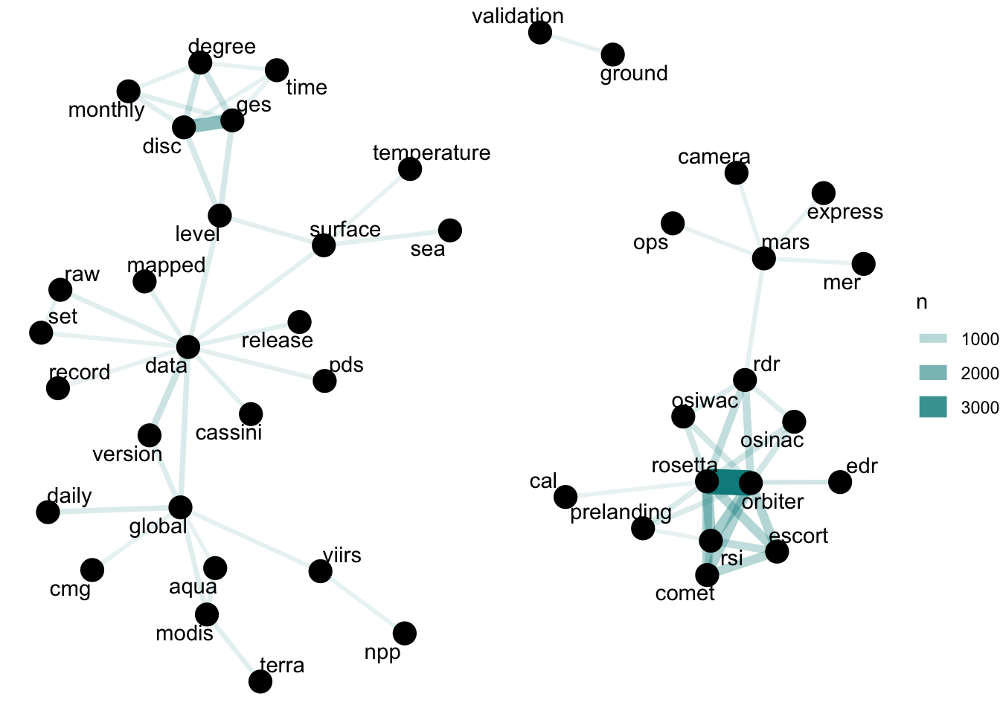
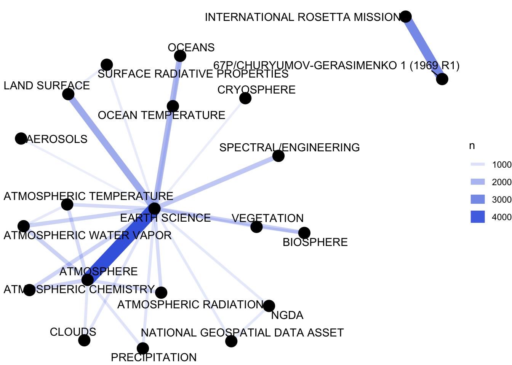
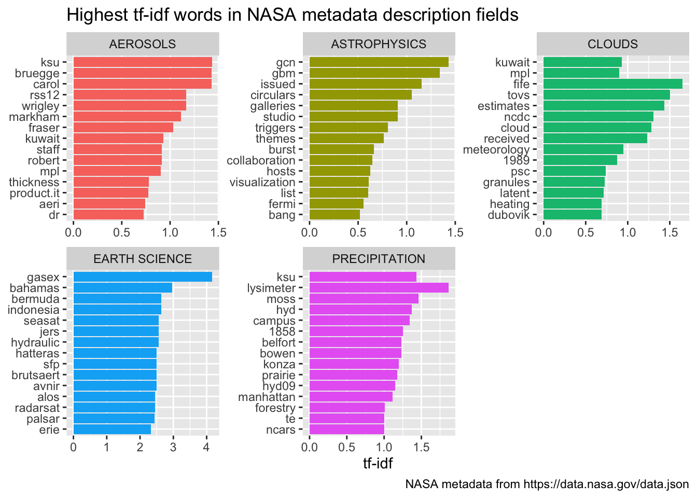

library(jsonlite)
library(dplyr)
library(tidyr)
library(widyr)
library(tidytext)
library(ggplot2)
library(igraph)
library(ggraph)# metadata <- fromJSON("https://data.nasa.gov/data.json")
load("metadata.rda")
names(metadata$dataset)## [1] "accessLevel" "landingPage"
## [3] "bureauCode" "issued"
## [5] "@type" "modified"
## [7] "references" "keyword"
## [9] "contactPoint" "publisher"
## [11] "identifier" "description"
## [13] "title" "programCode"
## [15] "distribution" "accrualPeriodicity"
## [17] "theme" "license"
## [19] "citation" "temporal"
## [21] "spatial" "language"
## [23] "graphic-preview-description" "graphic-preview-file"
## [25] "data-presentation-form" "release-place"
## [27] "series-name" "creator"
## [29] "dataQuality" "editor"
## [31] "issue-identification" "describedBy"
## [33] "describedByType" "rights"
## [35] "systemOfRecords"class(metadata$dataset$title)## [1] "character"class(metadata$dataset$description)## [1] "character"class(metadata$dataset$keyword)## [1] "list"nasa_title <- tibble(id = metadata$dataset$identifier,
title = metadata$dataset$title)
nasa_titlenasa_desc <- tibble(id = metadata$dataset$identifier,
desc = metadata$dataset$description)
nasa_desc %>%
select(desc) %>%
sample_n(5)nasa_keyword <- tibble(id = metadata$dataset$identifier,
keyword = metadata$dataset$keyword) %>%
unnest(keyword)
nasa_keywordnasa_title <- nasa_title %>%
unnest_tokens(word, title) %>%
anti_join(stop_words)## Joining with `by = join_by(word)`nasa_desc <- nasa_desc %>%
unnest_tokens(word, desc) %>%
anti_join(stop_words)## Joining with `by = join_by(word)`nasa_title %>%
count(word, sort = TRUE)my_stopwords <- tibble(word = c(as.character(1:10),
"v001","0.5","v1","v1.0","v2.0","0.4","r2022.0","67p", "v03", "l2", "l3", "l4", "v5.2.0",
"v003", "v004", "v005", "v006", "v7"))
nasa_title <- nasa_title %>%
anti_join(my_stopwords)## Joining with `by = join_by(word)`nasa_desc <- nasa_desc %>%
anti_join(my_stopwords)## Joining with `by = join_by(word)`nasa_keyword %>%
group_by(keyword) %>%
count(sort = TRUE)nasa_keyword <- nasa_keyword %>%
mutate(keyword = toupper(keyword))title_word_pairs <- nasa_title %>%
pairwise_count(word, id, sort = TRUE, upper = FALSE)
title_word_pairsdesc_word_pairs <- nasa_desc %>%
pairwise_count(word, id, sort = TRUE, upper = FALSE)
desc_word_pairsset.seed(1234)
title_word_pairs %>%
filter(n >= 250) %>%
graph_from_data_frame() %>%
ggraph(layout = "fr") +
geom_edge_link(aes(edge_alpha = n, edge_width = n), edge_colour = "cyan4") +
geom_node_point(size = 5) +
geom_node_text(aes(label = name), repel = TRUE,
point.padding = unit(0.2, "lines")) +
theme_void()
keyword_pairs <- nasa_keyword %>%
pairwise_count(keyword, id, sort = TRUE, upper = FALSE)
keyword_pairsset.seed(1234)
keyword_pairs %>%
filter(n >= 700) %>%
graph_from_data_frame() %>%
ggraph(layout = "fr") +
geom_edge_link(aes(edge_alpha = n, edge_width = n), edge_colour = "royalblue") +
geom_node_point(size = 5) +
geom_node_text(aes(label = name), repel = TRUE,
point.padding = unit(0.2, "lines")) +
theme_void()
desc_tf_idf <- nasa_desc %>%
count(id, word, sort = TRUE) %>%
bind_tf_idf(word, id, n)
desc_tf_idf %>%
arrange(-tf_idf)desc_tf_idf <- full_join(desc_tf_idf, nasa_keyword, by = "id")
desc_tf_idf %>%
filter(!near(tf, 1)) %>%
filter(keyword %in% c( "CLOUDS",
"AEROSOLS", "ASTROPHYSICS",
"PRECIPITATION", "EARTH SCIENCE")) %>%
arrange(desc(tf_idf)) %>%
group_by(keyword) %>%
distinct(word, keyword, .keep_all = TRUE) %>%
slice_max(tf_idf, n = 15, with_ties = FALSE) %>%
ungroup() %>%
mutate(word = factor(word, levels = rev(unique(word)))) %>%
ggplot(aes(tf_idf, word, fill = keyword)) +
geom_col(show.legend = FALSE) +
facet_wrap(~keyword, ncol = 3, scales = "free") +
labs(title = "Highest tf-idf words in NASA metadata description fields",
caption = "NASA metadata from https://data.nasa.gov/data.json",
x = "tf-idf", y = NULL)